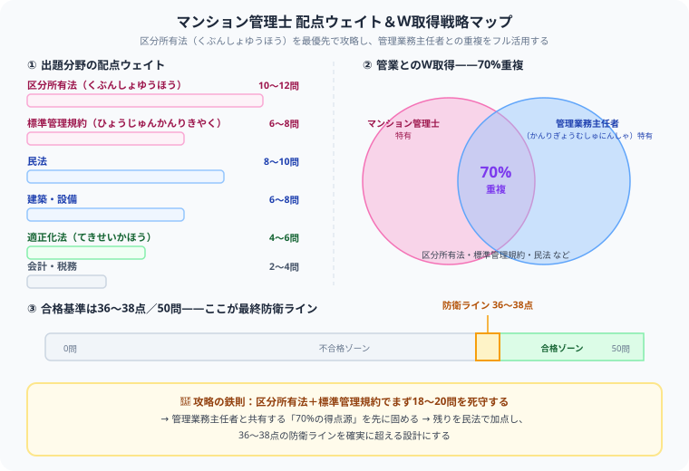

マンション管理士の独学合格ガイド【2026年版】難易度・勉強時間・科目別攻略法
大谷 一輝 より
「マンション管理の最高峰プロを目指そう！」と決意してテキストを開いた瞬間……「うわっ、なんじゃこりゃ、合格率8%の難関な上に、区分所有法だの標準管理規約だの、細かい数字の引っかけが多すぎて頭パンクするわ！」とフリーズしていませんか？（笑）。
毎日重い法律や数字と格闘している僕の視点から、この難所をゲーム感覚でサクッと攻略し、確実に合格をもぎ取るための【区分所有法ハック・独学逆算スケジュール】を優しくナビゲートします！
また、記事の末尾のほうにある【いいねボタン】をポチッと押してもらえると、僕のモチベーション維持のために、めちゃくちゃ嬉しいです！
マンション管理士はマンション管理組合のコンサルタントとして活躍できる国家資格です。合格率約8〜10%の難関ですが、宅建士・管理業務主任者と出題範囲が重なる部分が多く、これらの資格保有者はスムーズに学習を進められます。本記事では効率的な独学戦略を解説します。
受験生
先日、宅建に合格したので、その勢いでマンション管理士も取ろうと思っています！民法もやったし、正直「宅建の延長」くらいの感覚で余裕かなと…！
大谷（日商簿記1級勉強中）
ちょっと待ってください、そのテンションだと痛い目を見ます（笑）。実は僕も最初「宅建で民法をやったし余裕っしょ」と思っていたんですが、過去問を開いた瞬間「うわっ、なんじゃこりゃ、区分所有法の細かい条文の引っかけがエグすぎる…！」ってなりました。この試験は単純暗記じゃ絶対に太刀打ちできません。
受験生
えぇ…そんなに違うんですか？宅建の知識、意味なかったんでしょうか…。
大谷（日商簿記1級勉強中）
いえ、民法の土台はしっかり活きます！ただ「区分所有法」「標準管理規約」というマンション管理士特有の激ムズ分野が新たに立ちはだかるので、そこの対策が合否を分けます。ここで僕から最大のチート技を教えますね。実は管理業務主任者（管業）とマンション管理士は【試験範囲が70%も重複】しているんです。
受験生
70%も！？それって、2つの試験の教材をうまく使い分ければいいってことですか？
大谷（日商簿記1級勉強中）
その通り！しかも管業の方が難易度は少し易しいので、「管業のテキストで土台を固めつつ、マンション管理士特有の深い論点だけ上乗せする」という攻め方が最速です。まずは最重要ボスである『区分所有法』のハコから最優先で叩いて、標準管理規約→民法→適正化法の順に各個撃破していきましょう！
マンション管理士試験の基本情報
| 項目 | 内容 |
|---|---|
| 試験日 | 毎年11月下旬 |
| 合格率 | 8〜10% |
| 問題数 | 50問（四肢択一） |
| 試験時間 | 120分 |
| 合格基準 | 例年36〜38点程度（7割前後） |
| 必要勉強時間 | 500〜700時間 |
出題分野と攻略優先度

| 出題分野 | 出題数目安 | 重要度 | 攻略のコツ |
|---|---|---|---|
| 区分所有法 | 10〜12問 | ★★★★★ | 条文を正確に理解。最重要分野 |
| マンション標準管理規約 | 6〜8問 | ★★★★★ | 原始規約・変更手続きを整理 |
| マンション管理適正化法 | 4〜6問 | ★★★★ | 登録・業務規制の条文を覚える |
| 民法 | 8〜10問 | ★★★★ | 契約・不法行為・相続が頻出 |
| 建築・設備 | 6〜8問 | ★★★ | 構造・設備の基礎知識で得点 |
| 会計・税務 | 2〜4問 | ★★ | 財務諸表の読み方・消費税 |
💡 区分所有法の深い理解が合否を決める：マンション管理士特有の問題の多くは区分所有法から出題されます。単純な暗記ではなく「なぜそのルールがあるのか」を理解すると応用問題にも対応できます。
管理業務主任者との違いとW取得戦略
| 資格 | 合格率 | 難易度 | 主な業務 |
|---|---|---|---|
| マンション管理士 | 8〜10% | ★★★★ | 管理組合のコンサルタント（民間資格扱い） |
| 管理業務主任者 | 20〜25% | ★★★ | 管理委託契約の重要事項説明（独占業務） |
両資格は試験日が同じ時期で出題範囲が約70%重複します。管理業務主任者から先に取得し、翌年マンション管理士を受験するW取得戦略が効率的です。
独学6ヶ月合格スケジュール
| 時期 | 学習内容 | 目標 |
|---|---|---|
| 1〜2ヶ月目 | 区分所有法・民法のテキスト精読 | 基本的な概念を理解する |
| 3ヶ月目 | 標準管理規約・適正化法 | 条文の論点を整理 |
| 4ヶ月目 | 建築・設備・会計の基礎 | 満遍なく対策 |
| 5ヶ月目 | 過去問5年分を繰り返す | 正答率70%以上を目指す |
| 6ヶ月目 | 模擬試験・弱点の最終補強 | 本番形式で時間感覚を掴む |
⚠ 宅建との違いに注意：宅建合格者でも宅建と同じ感覚で学習すると手こずります。区分所有法はマンション管理士特有の深い知識が求められ、宅建の知識だけでは対応できません。
おすすめテキスト
- TAC「マンション管理士 一問一答セレクト1000」：問題数が多く本番対策に最適
- 「マンション管理士・管理業務主任者 基本テキスト」：W受験向け。2資格をまとめて学べる
- 過去問（過去10年分）：同じ論点が繰り返し出題されるため、過去問の反復が最も有効
まとめ
- 合格率8〜10%の難関で500〜700時間の学習が必要
- 区分所有法が最重要で深い理解が求められる
- 管理業務主任者とのW取得戦略が効率的
- 宅建合格者は学習の入りがスムーズになる
- 過去問の反復が最も効果的な学習法
合格率8〜10%の壁は決して低くありません。それでも、今こうして自分のキャリアと未来のために一歩を踏み出し、区分所有法の細かい条文と向き合っているあなたは、それだけで既にすごいことをしています。管業との重複をフル活用して、着実に36〜38点のラインを超えていきましょう。心から応援しています！この記事が少しでも力になったら、僕の執筆のモチベーション維持のために、この下にある【いいねボタン】をポチッと押してもらえると、めちゃくちゃ嬉しいです！